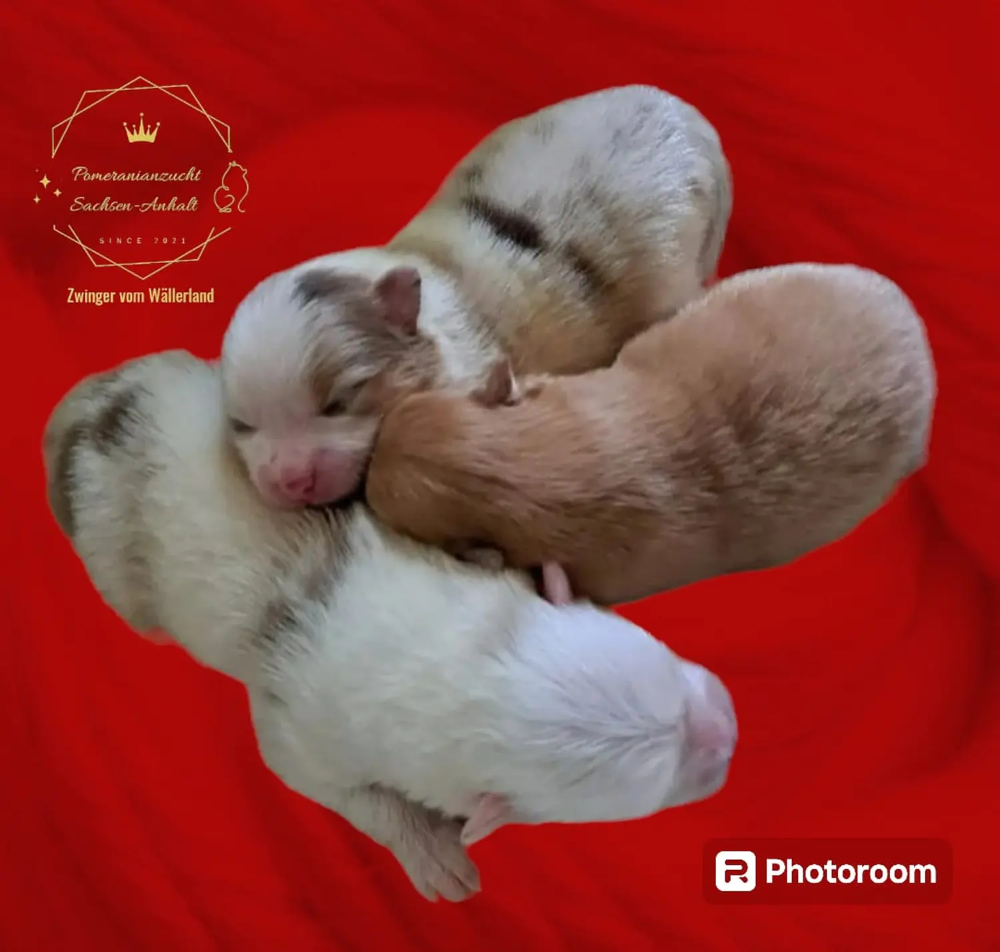
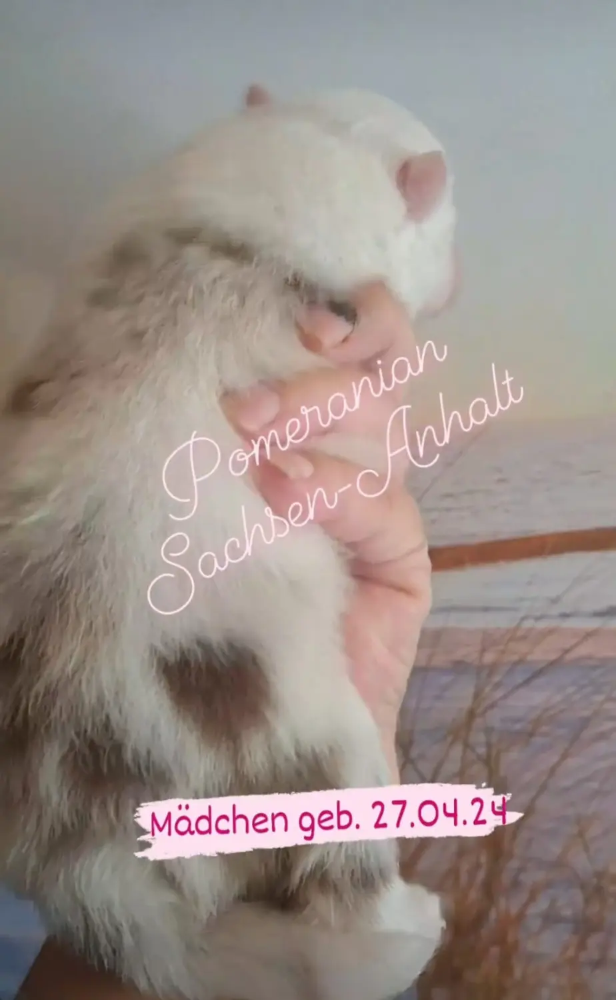

Unsere Wurfplanung und Aufzucht

Zucht News
Für unsere Welpen haben wir ihre Traumschlößchen gefunden, nette und verantwortungsbewußte Familien🥰.

Wurfplanung
Wurfplanung für 2026
Wir planen für 2026 unsere nächsten Zwergspitz Würfe. Ausgewachsen zwischen 20 und 25 cm in den Farben weiss-creme, creme/red Sable, black/schoko Merle, weiss-schwarz (evtl. mit Tanpoints, Parti und Tri)

Unsere Wurfplanung und Aufzucht
Wir nehmen uns genügend Zeit, um uns auf das bevorstehende schöne Ereignis vorzubereiten.
Unsere Welpen werden im Wohnzimmer geboren. Sofern die Mutter es nicht übernimmt, hole ich den Welpen behutsam aus der Fruchtblase, nabele ihn ab, rubbele ihn sanft trocken usw. und lege ihn sofort ans Gesäuge an. Das am ersten Lebenstag zur Verfügung stehende, wertvollste Colostrum unterschiedet sich erheblich von der späteren, so genannten reifen Muttermilch. Es ist in den ersten 24 h wichtig für das Überleben und die Entwicklung der Welpen. Das Colostrum stärkt das Immunsystem und liefert Energie und Nährstoffe für den Welpen.
Während der ersten drei bis fünf Tage verändert sich die Zusammensetzung von Colostrum langsam bis zur reifen Milch.
Nachdem ich ein paar Tage die Welpen beoachtet, ans Gesäuge angelegt und mehrfach am Tag das Gewicht kontrolliert habe, ziehen die Welpen mit ihrer Mama ins Welpenzimmer um. Das Welpenzimmer hat eine angemessene Temperatur, die wichtig für das Wohlbefinden der Welpen und der Mutterhündin ist. Die Wurfkiste ist zusätzlich mit einer Wärmematte ausgelegt. Um das Wundwerden des Gesäuges zu verhindern, kürze ich ganz vorsichtig die Krallen der Welpen.


Mit etwa 2 Wochen öffnen die Welpen langsam ihre Äuglein.
Die Welpenzufütterung hängt von der Milchleistung der Mutterhündin ab. Ab der 3. Woche bieten wir unseren Welpen hochwertiges Welpenfutter zum Start und Zufüttern an.
Ab der 4. Lebenswoche beginnen wir unsere Welpen zu entwurmen, damit sie nicht in ihrer Entwicklung geschädigt werden. In 2-wöchigen Abständen wird die Wurmkur bis zur Abgabe unserer Welpen wiederholt.
Wir beobachten unsere Welpen ständig, wie sie sich entwickeln und ob der Kot fest ist.
Ab der 4. Lebenswoche können sich unsere Welpen nicht nur im Welpenzimmer, sondern auch im Garten austoben und neues erkunden.




Wir erziehen unsere Welpen zu einem selbstbewussten, umgänglich und liebevollen Zwergspitz. Wir nehmen uns für die Welpen sehr viel Zeit, die Prägephase der Kleinen beginnt ab der 3. Lebenswoche, damit Ihr zukünftiger Zwergspitz ein wesensstarker Hund wird.
Vom ersten Tag an nehmen wir die Welpen mehrfach in die Hand und streicheln sie zärtlich. Das sind ihre ersten positiven Erfahrungen.
Während der gesamten Aufzucht nutzen wir jede Gelegenheit zum Streicheln und lieb haben. Natürlich achten wir auch drauf, dass sie während der Prägungsphase viele Geräusche azs Alltag und Natur kennenlernen, damit sie nicht ängstlich oder schreckhaft werden.
Mit viel Einfühlungsvermögen gewöhnen wir unsere Welpen an das Pflegeprogramm, an Wasser/ Duschen/ Abtrocknen/ Föhnen, Bürsten und Krallen schneiden.
Durch Tierarztbesuche usw. lernen unsere Welpen auch das Autofahren kennen. 1x die Woche besuchen wir auch die Senioren-Residenz in Bad Bibra.
Unsere Welpen werden unter strengen Zuchtauflagen aufgezogen. Die Eltern stammen aus einer gesunden und robusten Zucht, haben sn Ausstellungen teil genommen und die Zuchttauglichkeitsprüfung bestanden.
Bei der Welpenabgabe beraten wir Sie gerne in einem persönlichen Gespräch über die Fütterung, Haltung und Erziehung Ihres Welpen. Wir haben für Sie auch eine Welpenmappe vorbereitet, die alle Informationen beinhaltet.
Wir sind gerne Ihr ständiger Ansprechpartner für Ihren Zwergspitz und stehen Ihnen beratend zur Seite.
Bei Abgabe erhalten die neuen Hundeeltern von uns das Gesundheitszeugnis des Welpen, Nachweis über die tierärztliche Untersuchung. Ausserdem erhalten Sie einen EU-Heimtierausweis mit der durchgeführten Impfung (Grundimmunisierung), die Ahnentafel des Welpen und eine Erstausstattung, die Ihnen den Einzug Ihres Welpen erleichtern soll.


Eine Woche nachdem unsere Welpen geboren sind, stellen wir unsere Welpen auf unsere Webseite, Instagram, Tiktok, Facebook, Honestdog usw. mit Farbe und Geschlecht vor. Bei Interesse an einem Welpen aus unserer Zucht setzen Sie sich bitte mit uns rechtzeitig in Verbindung. Bevor wir unsere Welpen jemanden anvertrauen, möchten wir Sie gerne kennen lernen und ein persönliches Gespräch führen. Gerne vorab über ein Telefonat. Selbstverständlich haben Sie die Möglichkeit, uns ab der 4. Lebenswoche zu besuchen und Ihren Welpen bei uns zu Hause auszusuchen.
Wir möchten, dass unsere Welpen liebevolle Hundeeltern bekommen, die unseren Zwergspitz als vollwertiges Familienmitglied aufnehmen und ihm ein lebenslanges Zuhause bieten.
Entscheiden Sie sich beim persönlichen Kennenlernen für einen Zwergspitz aus unserer Zucht, gehen wir gemeinsam den Kaufvertrag durch und unterzeichnen diesen. Mit Zahlung der Reservierungsgebühr ist der Welpe für Sie fest reserviert. Sie bekommen nun ein wöchentliches Update in Form von Bildern, Videos, Entwicklung des Welpen etc.
Für Welpeneltern, die sehr weit entfernt wohnen, machen wir gerne eine Ausnahme und stellen den Welpen mit Fotos und Videos vor. Haben Sie sich für Ihren Wunschwelpen entschieden, versenden wir den Kaufvertrag per WhatsApp oder Email. Nach Unterzeichnung und Erhalt der Reservierungsgebühr ist dieser Vertrag für beide Parteien bindend. Bei Abholung Ihres Welpen empfehlen wir zu zweit anzureisen und mit einer Übernachtung. Alternativ können wir auch einen Kurier beauftragen, der seperat bei Lieferung zu bezahlen ist. Bezüglich Termin und Route müssen wir uns nach dem Kurier richten.
Ab der 10. bis 12. Lebenswoche, je nach Entwicklungsstand und wie es bei Ihnen zeitlich passt, darf der Welpe bei Ihnen einziehen.
Unsere Erstaustattung